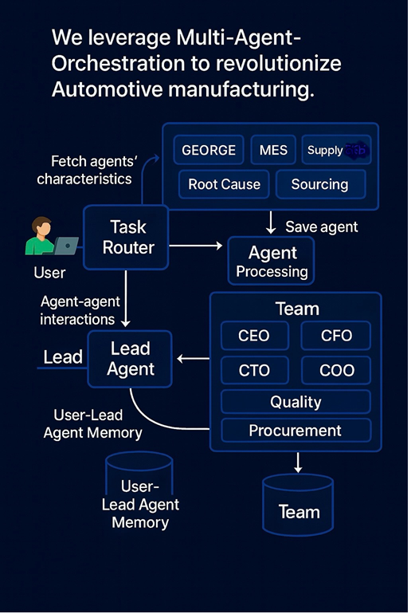

Architecture
virtauto.OS Reference Architecture
ISA-95 aligned, API-first, hybrid cloud. Agentic patterns baked-in. Orchestrated by GEORGE.
GEORGE Architecture
GEORGE & User Interaction
Design Patterns
Reflection
Self-review loops for safer outputs.
Tool Use
Deterministic API/DB calls for grounded actions.
ReAct
Reason → Act → Observe cycles.
Planning
Sub-goals & steps improve task success.
Multi-Agent
Supervisor (GEORGE) + domain agents cooperation.
Layers (ISA-95 framing)
- Enterprise (L4): ERP/PLM/SCM connectors (APIs, events).
- Manufacturing Ops (L3): MES integration, schedules, OEE.
- Control (L2): OPC UA/SCADA gateways, telemetry.
- Edge (L1/L0): Sensors, PLCs, Computer Vision.
- Agent Layer: Orchestration (GEORGE), tools, memory, guardrails.
Maturity Roadmap (5 Levels)
Start at Level 2–3 for quick value (routing & tool-use), then evolve to supervised multi-agent patterns with measurable KPIs before exploring autonomy.